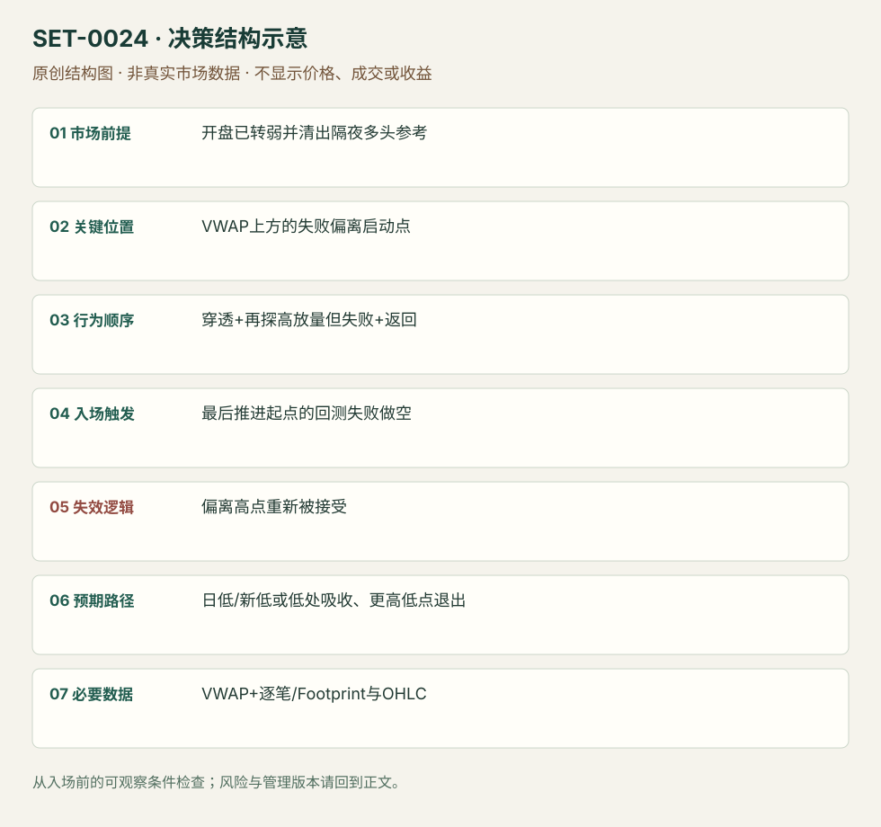

VWAP 穿透、偏离失败与回测
VWAP Penetration–Deviation–Retest · SET-0024 · reviewed · v1.0.0
盈利证据：not_established。审查范围与来源版本见第13节；未知字段保留缺失原因。
1. 名称与快速概览
在已转弱的 session 中，反弹不仅接近 VWAP，还穿透并再做一次高成交偏离；偏离失败后，回测最后推进的起点做原弱方向。三阶段少一个便不是本条。
记录口径：PA supporting；必要数据 OHLC、VWAP、footprint、trade_prints。名称性质：编辑性描述名，英文保留来源术语以便检索。reviewed 只表示本条规则与证据记录审查通过，盈利状态为 not_established。
2. 本质与行为假说
假说是穿透均价后的新买入未能推动继续上涨，回测失败位置会暴露脆弱多头。大打印只表示大成交，不能证明交易者身份或清扫意图。
3. 适用市场与环境
源例ES隔夜偏多，现金开盘先清掉隔夜低点；随后回到VWAP寻找卖出。只有均价触碰、持续强趋势上穿且被接受，都不满足。
来源实用市场：S&P500期货。
Session：美股/ES现金参考段 09:30–16:00 America/New_York；收盘前平仓。期货夜盘单独建背景，不将其并入开盘区间。
跨市场：本版不主张已经验证的跨市场迁移；更换市场必须重定数据来源、流动性与session。
4. 出现前的观察清单
锁定隔夜低、现金开盘行为和当日VWAP；逐笔/Footprint识别穿透与更高探测时成交是否增加。预先圈出最后推进起点，不能等跌完再选。
5. 形成过程与状态转换
背景转弱 → 反弹到VWAP → 穿透 → 高成交继续探高却不持续 → 返回最后推进起点 → 回测不能重启上涨 → 空头执行。
6. Entry trigger 与执行方式
原文在失败偏离启动位置的回测做空；可用回测处报价/主动卖出，须有卖压恢复的实际证据。若没有看到回测，不能把最高点事后当成交入口。
7. Invalidation 与止损逻辑
偏离高点上方；重新被接受在高点上方撤销失败假说。以成交量强弱作软判断也需要硬风险边界，否则订单流词汇不能界定最大亏损。
8. Exit、target 与 trade management
目标已清出的日低或新低；接近日低出现吸收/更高低点应退出，不坚持必须创新低。若突破失败起点后久久不续跌，时间失效阈值由测试设定，属编辑模块。
9. 常见 variations
买方向对称；1秒打印与Footprint只是观察形式。普通VWAP回抽空不自动满足穿透和二次偏离，归相关父逻辑而不另计本条。
10. 失败方式与不交易条件
均价之上建立新价值；最后探高持续创新高；回测点无法在当时辨认；供应商成交归类不可靠；把非公开Heavy Hitters身份判断当必需可复现数据。
11. 与相近 setups 的区别
12. 图表与案例解读
已看两图，均有作者明确 P/E/R 标注；可以核对状态先后。静态截图不能核对实时成交速度或原文所称参与者，日期和时区未核实。
- [VIS-000026] 1sec chart with Footprint and Heavy Hitters；定位：1sec chart with Footprint and Heavy Hitters。作者黄标P/E/R展示穿透、偏离和回测；白色价格与大打印后在回测点转弱。 验证：chart_viewed。
- [VIS-000027] Footprint chart with reversal into VWAP；定位：Footprint chart with a reversal into VWAP。另一日脚印图标三个阶段；偏离高点和回测区可见。 验证：chart_viewed。


本地原创示意（VIS-000081，非真实市场数据）：

小屏阅读可打开原尺寸示意图并缩放。

此图用于对照识别顺序与风险定义；不计入真实案例覆盖率。
视觉材料元数据与查看范围
- VIS-000026 · real_source_chart / structure_and_trigger / chart_viewed
品种：S&P500期货；日期：未知/不适用；周期：1秒，依来源正文；时区：未知/不适用
日期未在图中核对；时区未在图中核对；来源图表不是成交审计 - VIS-000027 · real_source_chart / structure_and_trigger / chart_viewed
品种：S&P500期货；日期：未知/不适用；周期：未知/不适用；时区：未知/不适用
日期未在图中核对；周期未在图中核对；时区未在图中核对；来源图表不是成交审计 - VIS-000081 · synthetic_structure_diagram / illustration_only / generated_not_market_evidence
品种：未知/不适用；日期：未知/不适用；周期：未知/不适用；时区：未知/不适用
无真实品种、日期或价格：这是结构示意
13. 证据、分歧与未知项
三阶段规则主要由 Axia 同家族两张例图解释；TradingSim提供失败边界，核心独立复核有限。原文把大打印称 heavy hitters，本库仅记录成交大小与价格响应。
- [EVD-000044] Axia Futures，《VWAP Trend Trading Strategies》，SRC-0070；定位：VWAP Selling Strategy: Penetration / Deviation / Retest。支持：隔夜多头被开盘下跌清出后回升VWAP，穿透后增量探高失败，在最后推进起点回测做空，止损偏离高点、目标日低/吸收。
- [EVD-000045] Al Hill / TradingSim，《The VWAP Indicator Ultimate Guide And Video》，SRC-0022；定位：Chapter 9 Hard Break of VWAP / RIOT and MBI。支持：独立来源给VWAP失守后不能期待必然回归的反例；不佐证三阶段精确触发。
审查边界：来源份数与独立核心核验分开；当前类别为 independent_context_only。正文中的概念、官方事实、衍生解说或同族资料只按其支持范围使用。
14. 可用于复盘的检查表
- ☐ 下单前的前提可核对：开盘已转弱并清出隔夜多头参考
- ☐ 事前标记位置：VWAP上方的失败偏离启动点
- ☐ 行为按顺序出现：穿透+再探高放量但失败+返回
- ☐ 实际触发符合选定版本：最后推进起点的回测失败做空
- ☐ 事先写明本次否定条件：偏离高点重新被接受
- ☐ 目标/路径只用当时已知信息：日低/新低或低处吸收、更高低点退出
- ☐ 数据满足 VWAP+逐笔/Footprint与OHLC；记录时间、点差、滑点、队列和未成交
- ☐ 记录截止平仓及规则偏离；正常亏损不事后改成“未成立”
15. 后续验证问题
偏离启动点能否无事后信息一致标注？大成交的阈值是否需按产品归一化？不用专有大打印指标的等价性怎样？
双向相关导航
- SET-0023 弱开盘跌势的 VWAP 收复 0024 在原弱方向背景中等穿越偏离失败后的回测做空，而非把首次穿线当多头恢复。
- SET-0043 逆势主动失衡失败后的顺势回归 0043 用明确失败的对角失衡区做原趋势；本条规定均价穿透与二次偏离，不必须堆叠失衡。
- SET-0025 平衡日的 VWAP 过度偏离回归 0024 必须穿透和偏离均价后回测起点；本条在远离且平衡的外侧等衰退。